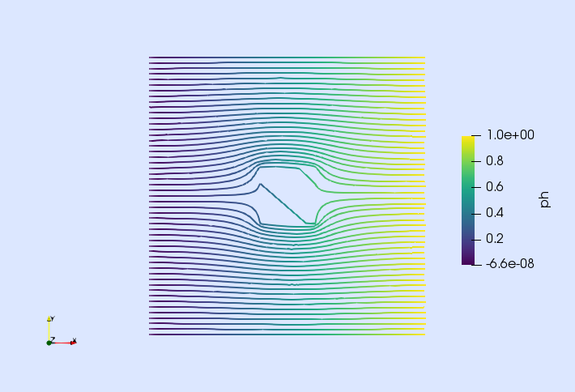

Tutorial 7: Darcy equation (with RT)


In this tutorial, we will learn
- How to implement multi-field PDEs
- How to build div-conforming FE spaces
- How to impose boundary conditions in multi-field problems
Problem statement
In this tutorial, we show how to solve a multi-field PDE in Gridap. As a model problem, we consider the Darcy equations with Dirichlet and Neumann boundary conditions. The PDE we want to solve is: find the flux vector $u$, and the pressure $p$ such that
\[ \left\lbrace \begin{aligned} \kappa^{-1} u + \nabla p = 0 \ &\text{in} \ \Omega,\\ \nabla \cdot u = f \ &\text{in} \ \Omega,\\ u \cdot n = g \ &\text{on}\ \Gamma_{\rm D},\\ p = h \ &\text{on}\ \Gamma_{\rm N},\\ \end{aligned} \right.\]
being $n$ the outwards unit normal vector to the boundary $\partial\Omega$. In this particular tutorial, we consider the unit square $\Omega \doteq (0,1)^2$ as the computational domain, the Neumann boundary $\Gamma_{\rm N}$ is the right and left sides of $\Omega$, and $\Gamma_{\rm D}$ is the bottom and top sides of $\Omega$. We consider $f = g \doteq 0$ and $h(x) \doteq x_1$, i.e., $h$ equal to 0 on the left side and 1 on the right side. The inverse of the permeability tensor, namely $\kappa^{-1}(x)$, is chosen equal to
\[\begin{pmatrix} 100 & 90 \\ 90 & 100 \end{pmatrix} \text{ for } \ x \in [0.4,0.6]^2, \text{ and } \begin{pmatrix} 1 & 0 \\ 0 & 1 \end{pmatrix} \ \text {otherwise.}\]
In order to state this problem in weak form, we introduce the following Sobolev spaces. $H(\mathrm{div};\Omega)$ is the space of vector fields in $\Omega$, whose components and divergence are in $L^2(\Omega)$. On the other hand, $H_g(\mathrm{div};\Omega)$ and $H_0(\mathrm{div};\Omega)$ are the subspaces of functions in $H(\mathrm{div};\Omega)$ such that their normal traces are equal to $g$ and $0$ respectively almost everywhere in $\Gamma_{\rm D}$. With these notations, the weak form reads: find $(u,p)\in H_g(\mathrm{div};\Omega)\times L^2(\Omega)$ such that $a((u,p),(v,q)) = b(v,q)$ for all $(v,q)\in H_0(\mathrm{div};\Omega)\times L^2(\Omega)$, where
\[\begin{aligned} a((u,p),(v,q)) &\doteq \int_{\Omega} v \cdot \left(\kappa^{-1} u\right) \ {\rm d}\Omega - \int_{\Omega} (\nabla \cdot v)\ p \ {\rm d}\Omega + \int_{\Omega} q\ (\nabla \cdot u) \ {\rm d}\Omega,\\ b(v,q) &\doteq \int_{\Omega} q\ f \ {\rm d}\Omega - \int_{\Gamma_{\rm N}} (v\cdot n)\ h \ {\rm d}\Gamma. \end{aligned}\]
Numerical scheme
In this tutorial, we use the Raviart-Thomas (RT) space for the flux approximation [1]. On a reference square with sides aligned with the Cartesian axes, the RT space of order $k$ is represented as $Q_{(k+1,k)} \times Q_{(k,k+1)}$, being the polynomial space defined as follows. The component $w_\alpha$ of a vector field $w$ in $Q_{(k+1,k)} \times Q_{(k,k+1)}$ is obtained as the tensor product of univariate polynomials of order $k+1$ in direction $\alpha$ times univariate polynomials of order $k$ on the other directions. That is, $\nabla\cdot w \in Q_k$, where $Q_k$ is the multivariate polynomial space of degree at most $k$ in each of the spatial coordinates. Note that the definition of the RT space also applies to arbitrary dimensions. The global FE space for the flux $V$ is obtained by mapping the cell-wise RT space into the physical space using the Piola transformation and enforcing continuity of normal traces across cells (see [1] for specific details).
We consider the subspace $V_0$ of functions in $V$ with zero normal trace on $\Gamma_{\rm D}$, and the subspace $V_g$ of functions in $V$ with normal trace equal to the projection of $g$ onto the space of traces of $V$ on $\Gamma_{\rm D}$. With regard to the pressure, we consider the discontinuous space of cell-wise polynomials in $Q_k$.
Discrete model
We start the driver loading the Gridap package and constructing the geometrical model. We generate a $100\times100$ structured mesh for the domain $(0,1)^2$.
using Gridap
domain = (0,1,0,1)
partition = (100,100)
model = CartesianDiscreteModel(domain,partition)Multi-field FE spaces
Next, we build the FE spaces. We consider the first order RT space for the flux and the discontinuous pressure space as described above. This mixed FE pair satisfies the inf-sup condition and, thus, it is stable.
order = 1
h = 1/100
V = FESpace(model, ReferenceFE(raviart_thomas,Float64,order),
conformity=:HDiv, dirichlet_tags=[5,6], scale_dof=true, global_meshsize=h)
Q = FESpace(model, ReferenceFE(lagrangian,Float64,order),
conformity=:L2, scale_dof=true, global_meshsize=h)We select conformity=:HDiv for the flux (i.e., shape functions with $H^1(\mathrm{div};\Omega)$ regularity) and conformity=:L2 for the pressure (i.e. discontinuous shape functions). Note that the Dirichlet boundary for the flux are the bottom and top sides of the squared domain (identified with the boundary tags 5, and 6 respectively), whereas no Dirichlet data can be imposed on the pressure space.
The scale_dof=true argument is given to cancel the scaling of the DoFs with the meshsize h that is introduced by the piola map, e.g. h$^{2-1}$ (2 is the dimension) for the div-conforming contra-variant Piola map. This is usefull for mixed elements of different conformity that use small or non-uniform meshsize. On a uniform Cartesian mesh like model used here, we also passed global_meshsize=1/100. This argument fixes the local meshsize estimate needed to re-scale the DoFs, avoiding the computation of the volume of each face of the mesh that own a DoF. But this should only be used on quasi-uniform and shape-regular meshes.
From these objects, we construct the trial spaces. Note that we impose homogeneous boundary conditions for the flux.
uD = VectorValue(0.0,0.0)
U = TrialFESpace(V,uD)
P = TrialFESpace(Q)When the sinlge-field spaces have been designed, the multi-field test and trial spaces are expressed as arrays of single-field ones in a natural way.
Y = MultiFieldFESpace([V, Q])
X = MultiFieldFESpace([U, P])Numerical integration
In this example we need to integrate in the interior of $\Omega$ and on the Neumann boundary $\Gamma_{\rm N}$. For the volume integrals, we extract the triangulation from the geometrical model and define the corresponding Lebesgue measures, which will allow to write down the integrals of the weak form.
trian = Triangulation(model)
degree = 2
dΩ = Measure(trian,degree)In order to integrate the Neumann boundary condition, we only need to build an integration mesh for the right side of the domain (which is the only part of $\Gamma_{\rm N}$, where the Neumann function $h$ is different from zero). Within the model, the right side of $\Omega$ is identified with the boundary tag 8. Using this identifier, we extract the corresponding surface triangulation and create the required Lebesgue measure.
neumanntags = [8,]
btrian = BoundaryTriangulation(model,tags=neumanntags)
dΓ = Measure(btrian,degree)Weak form
We start by defining the permeability tensors inverses commented above.
const kinv1 = TensorValue(1.0,0.0,0.0,1.0)
const kinv2 = TensorValue(100.0,90.0,90.0,100.0)
function σ(x,u)
if ((abs(x[1]-0.5) <= 0.1) && (abs(x[2]-0.5) <= 0.1))
return kinv2⋅u
else
return kinv1⋅u
end
endWith this definition, we can express the integrand of the bilinear form as follows.
px = get_physical_coordinate(trian)
a((u,p), (v,q)) = ∫(v⋅(σ∘(px,u)) - (∇⋅v)*p + q*(∇⋅u))dΩThe arguments (u,p) and (v,q) of function a represent a trial and a test function, respectively. Notice that we unpack the functions directly from the multi-field test and trial spaces X and Y. E.g., v represents a test function for the flux and q for the pressure, which correspond to the first and second entries of Y. From the single-field functions, we write the different terms of the bilinear form as we have done in previous tutorials.
In a similar way, we can define the forcing term related to the Neumann boundary condition.
nb = get_normal_vector(btrian)
h = -1.0
b((v,q)) = ∫((v⋅nb)*h)dΓMulti-field FE problem
Finally, we can assemble the FE problem and solve it. Note that we build the AffineFEOperator object using the multi-field trial and test spaces Y and X.
op = AffineFEOperator(a,b,X,Y)
xh = solve(op)
uh, ph = xhSince this is a multi-field example, the solve function returns a multi-field solution xh, which can be unpacked in order to finally recover each field of the problem. The resulting single-field objects can be visualized as in previous tutorials (see next figure).
mkpath("output_path")
writevtk(trian,"output_path/darcyresults",cellfields=["uh"=>uh,"ph"=>ph])
References
[1] F. Brezzi and M. Fortin. Mixed and hybrid finite element methods. Springer-Verlag, 1991.
This page was generated using Literate.jl.